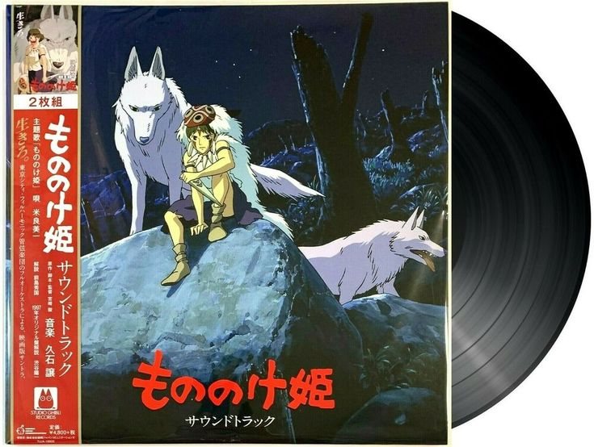

Studio Ghibli's music is made special by the talented composer Joe Hisaishi. Hisaishi, originally named Mamoru Fujisawa, is a famous Japanese musician known for creating beautiful melodies that make you feel different emotions. He's worked closely with Studio Ghibli, and together they've made some of the most memorable music in movies. Hisaishi's music not only fits perfectly with the stories but also stands out on its own as something very touching and powerful. He mixes classical music with unique and sometimes playful tunes that match Ghibli's magical worlds. Whether it's the sweeping music in "Spirited Away" or the cheerful tunes in "My Neighbor Totoro," Hisaishi's music makes Ghibli's movies even more captivating and emotional. He's an incredibly important figure in the world of movie music, and he's loved by fans all around the world. His music has a special place not only in Ghibli films but in all of cinema. I'm a big fan of his work as well and I would love to see it live. Joe Hisaishi is currently on tour, unfortunatly he is not stopping by Netherlands.